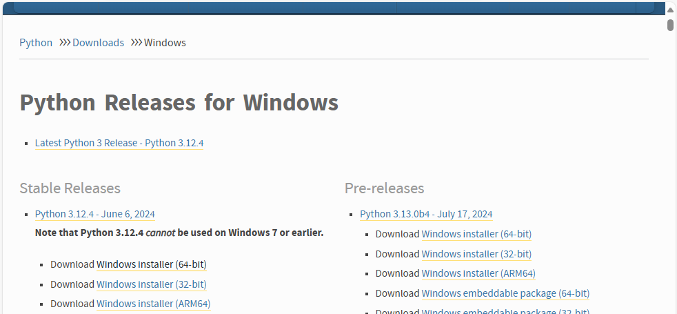
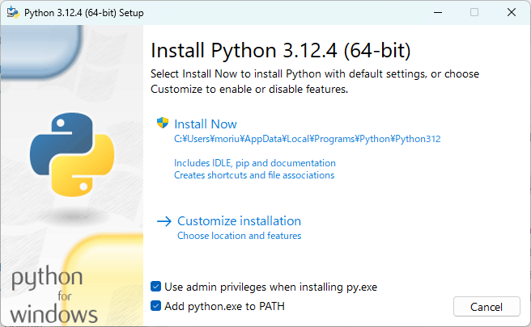
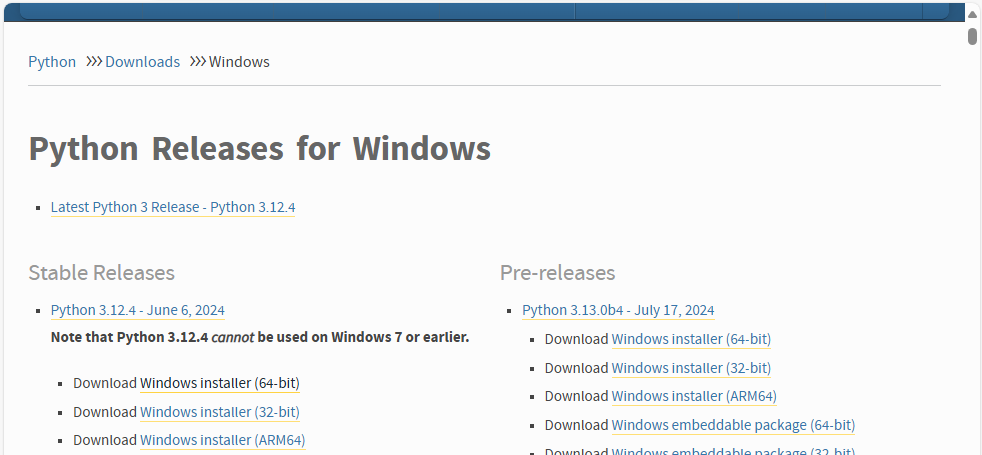
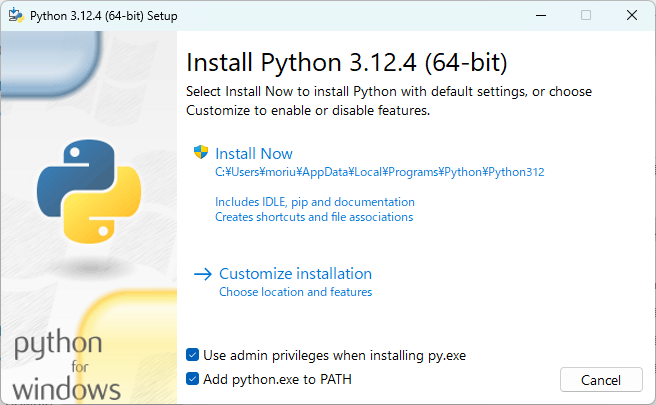

Python環境の準備
Python 3.12.4の例
- ダウンロード
- Python Downloads Windowsを開く
- Stable ReleasesのPython 3.12.4のWindows Installer (64bit)をダウンロード

- インストール
- ダウンロードしたexeファイルを実行
- Add python.exe to PATHをチェックして[Install Now]

- Setup was successful画面で[Close]
- 仮想環境作成
C:\dev> python -m venv --system-site-packages venv
- 仮想環境有効化
C:\dev> venv\Scripts\activate
(venv) C:\dev>
- pip更新
C:\dev>python -m pip install --upgrade pip
- Python仮想環境を終了（Python仮想環境を使い終わってから実施）
(venv) C:\dev> deactivate
- Python Downloads Windowsを開く
- Stable ReleasesのPython 3.12.4のWindows Installer (64bit)をダウンロード

- ダウンロードしたexeファイルを実行
- Add python.exe to PATHをチェックして[Install Now]
 - Setup was successful画面で[Close]
C:\dev> python -m venv --system-site-packages venv
C:\dev> venv\Scripts\activate (venv) C:\dev>
C:\dev>python -m pip install --upgrade pip
(venv) C:\dev> deactivate